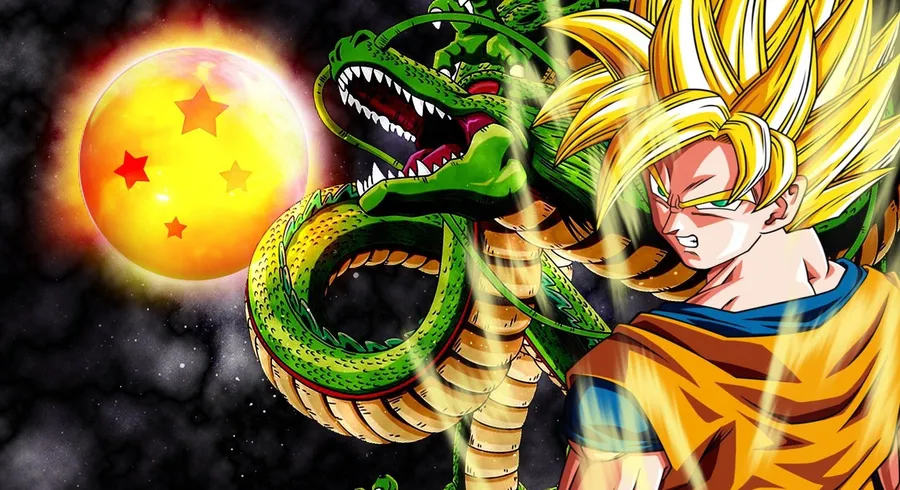
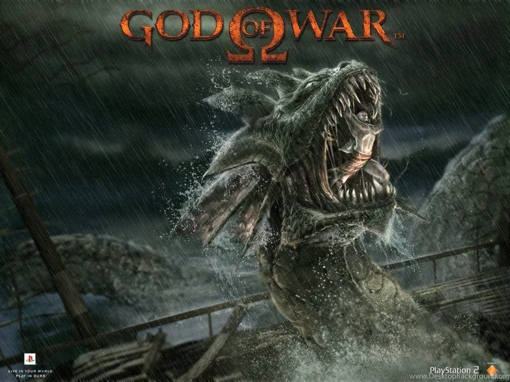
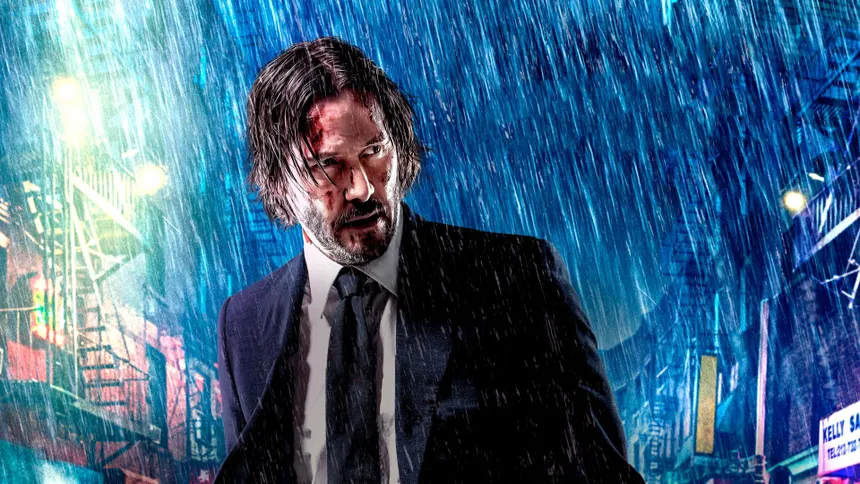
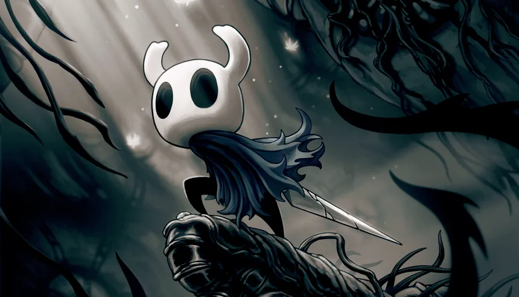
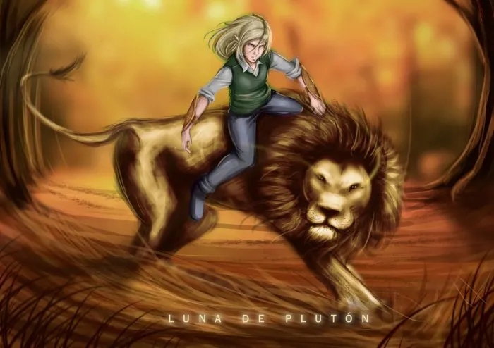

¡Hola! Soy Kamallet Seleven
Mis gustos:
- Jugar jueguitos
- Ver alguna que otra serie o película
- Leer novelas (aunque no lo hago)
- Ver videos, MUCHOS videos
- Escuchar podcasts
- Escuchar música mientras camino
- Hacer ejercicio (tampoco lo hago)
- Ahora, programar :D
Y las siguientes obras:
Dragon Ball

"Me duele decirlo... Para mí, hay un mejor camino hacia el poder. No es el amor. Es FURIA"
Dragon Ball es una serie de manga y anime creada por Akira Toriyama. La historia sigue las aventuras de Goku, un niño con un corazón bondadoso que vive en un mundo donde los guerreros más fuertes compiten por proteger la Tierra de amenazas. La serie es conocida por su estilo de acción, sus personajes memorables y su narrativa que combina comedia, drama y elementos de fantasía.
Wiki
Análisis
God of War

"Las Manos de la Muerte no pudieron derrotarme, las Hermanas del Destino no pudieron detenerme, y tú... ¡No verás el fin de este día! ¡Yo tendré mi VENGANZA!".
God of War es una saga de videojuegos de acción estilo "Hack & Slash" (corta y machaca), un género enfatizado en el combate cuerpo a cuerpo y en los combos con el uso de muchas armas. Este es uno de los referentes del género. Su historia se divide en dos partes principales: la "griega" y la "nórdica". La griega se enfoca en el odio del protagonista, Kratos, hacia los dioses, quienes lo han traicionado incontables veces, mientras que la nórdica se centra en el cuidado de Kratos hacia su hijo, Atreus, lo único que queda de su familia.
Wiki
Análisis
John Wick

"Ese puto don nadie es John Wick. Un día fue nuestro socio ¿Sabes? Le llaman Baba Yaga."
John Wick es una saga de películas de acción protagonizada por Keanu Reeves. La historia se centra en un ex-asesino a sueldo que busca venganza tras la muerte de su perro, regalo de su difunta esposa. La saga es conocida por sus intensas secuencias de acción, coreografías de combate y el desarrollo del personaje principal, quien se enfrenta a un mundo criminal lleno de reglas y códigos. Las películas rebosan de detalles que te cuentan más de la historia del mundo de John Wick sin palabras, detalles que, para algunos, elevan el nivel de estas producciones.
Wiki
Análisis
Hollow Knight

"Seres superiores, estas palabras son únicamente para ustedes. Nuestra vasija pura ha ascendido. Más allá sólo está el rechazo y el arrepentimiento de su creación. Nosotros no deberemos entrar a ese espacio nunca más."
Hollow Knight es un videojuego estilo "Metroidvania", enfocado en la exploración y la adquisición de habilidades y poderes para agilizar el movimiento y el combate. Su historia se cuenta de una manera muy sutil, a través de los diálogos de los personajes y el ambiente del juego. La historia se centra en un caballero que explora Hallownest, un reino subterráneo lleno de insectos y criaturas extrañas, mientras descubre la historia de este mundo y su propia identidad.
Wiki
Análisis
Luna de Plutón

"El mundo es un lugar cruel, pero no hay que dejar que eso nos haga crueles a nosotros."
Luna de Plutón es una novela de ciencia ficción que explora la vida en un futuro donde la humanidad ha colonizado otros planetas. La historia sigue a un grupo de personajes que enfrentan desafíos tanto personales como sociales mientras navegan por un universo lleno de misterios y peligros. La novela aborda temas como la ética, la supervivencia y la naturaleza humana en un contexto futurista.
Wiki
Análisis